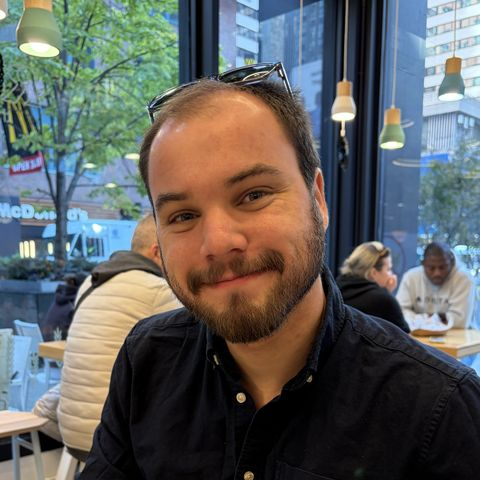
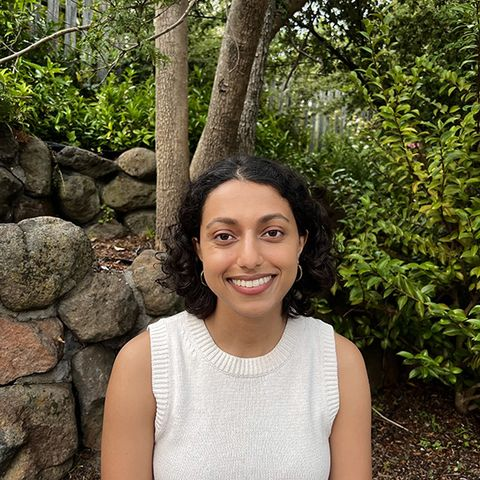
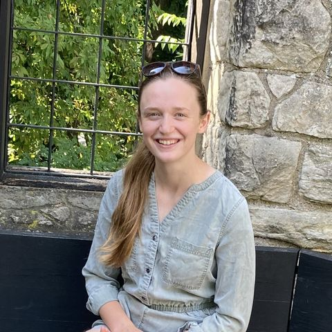
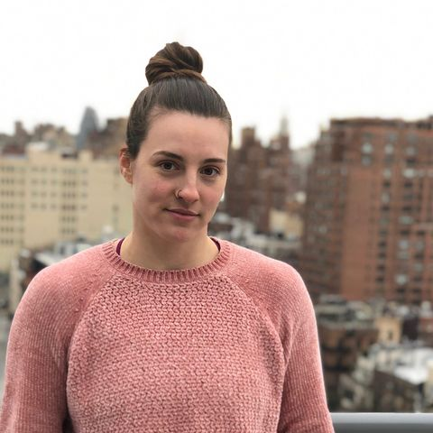

Students
Who I advise
I work with students in theoretical syntax, semantics, pragmatics, and morphology, generally on research projects involving under-described languages. My advisees have presented their work at top conferences in syntax and semantics and have competed successfully for the NSF graduate research fellowship. Former advisees are working in a variety of careers, including as professors and in university administration.
I encourage prospective graduate students interested in formal linguistics to contact me and to learn more about the Berkeley graduate program here.
Current students
- Kang Franco Liu
- Margaret Asperheim
- Chase Boles
- Tshering Dorji

Tomás Fuchs-Lynch
Alumni

Shweta AkolkarPostdoc, Princeton
Rebecca JarvisPostdoc, University of Potsdam- Emily ClemAssociate Professor, UC San Diego
- Virginia DawsonAssociate Professor, Western Washington

Tessa ScottProject Manager- Madeline BossiTeacher
- Emily DrummondAssessment and Project Manager